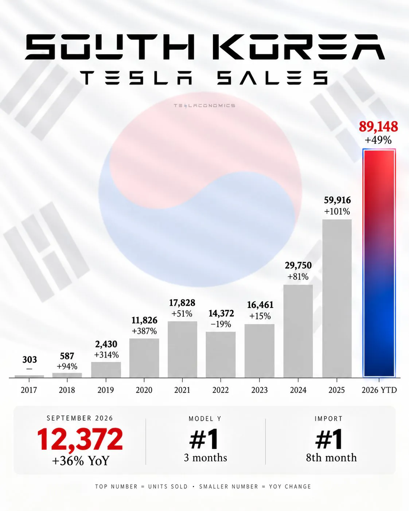

한국 테슬라 연도별 판매량
댓글
아이오닉9이..?
항상 600찍히던데 완충하면
80%만 채워도 650찍히는데; 무슨 스포츠모드로 쏘고 다님? 아님 성능형 4륜이던지
아님 에코모드임
4륜 항속형임
딱히 불만 없음. 차는 너무 좋음.
자기 만족하고 타면 괜찮지 제3자가 헛소리 할 필요 없지.
그니까 자기랑 운전습관이 다르던가 휠사이즈나 트림 다를수도 있는데 전기차 차주들은 죄다 왤케 피해의식이 있는지 모르겠음 ㅋㅋㅋ
오래 탈 생각이면 지금 시점에 현기는 좀 그렇지
테슬라는 기능만 풀어주면 바로 FSD 사용 가능한데
현기차는 아예 차를 바꿔야 되니까
아반떼 살빠에야 테슬라산다 ㅋㅋ
현기전기차는 지자체 보조금 나오는지역 아니면 돈 존나 아까운듯
Fsd풀리면 기존 모델xs 처럼 라이트 말고 찐fsd들어가는거
아닌가 빠르면 28년엔 될거같은데 그거만 생각해도
4999는 존나 가성비 좋다생각함
친구 주니퍼 끌어봤는데 내기준 생각보다 승차감 좋고
스피커 존나 빵빵해서 맘에듬
단점은 원페달이 강제인데 이게 긴급상황에서 사고칠까봐
좀 걸림
다들 시기상조 어쩌구 5분안에 완충되는 기술 저쩌구 했으면서, 다 사는구나 ㅋㅋㅋㅋㅋㅋㅋ
사실 충전보다 자동운전이 넘사벽임
난 테슬라 자율주행엔 관심없는데 주변사물 인식이랑 소리는 안나오지만 4채널 블박 기능이게 너무 탐나더라 현기는 언제쯤 가능할려나..
2022년식 테슬라에도 FSD lite 를 업데이트해주고
그록 Ai를 원격 업데이트로 넣어준다.
2022 년식 아이오닉5에 이런게 있냐?
2026년식 아이오닉을 사서 타면 5년뒤에 그냥 감가 이빠이 먹은 중고차 되는거지만
테슬라 후속지원을 아무도 깔 순 없을걸?
지금 테슬라 산 사람들이 물론 중국생산이라 fsd 가 막혀있는거지만, 하드웨어는 이미 완성임.
물론 자율주행 안보고 그냥 중형 suv전기차를 4999만원에 사는것도 그냥 메리트임.
fsd 없어도 살만함
fsd는 결국 비감독형까지 가지 않는이상 너무 불편하긴 함. 운전하는게 어차피 남는 시간 쓰는거라 fsd 안쓰고 운전하는 부업한다 생각하면 돈버는거임.
핸들 없는 풀 비감독형이 나와야 좀 메리트가 있을 듯 한데, 그건 결국 새 차를 사야해서 거서 거기인듯.
결국 지금 fsd는 운전만 하는 단계를 넘어서서
주차공간 부족한 구역일때 내려서 밥먹는동안 근처 빙빙 돌고 있는다던가, 알아서 밥 충전하고 온다던가
하는 편의성까지 보장해줘야 밸류가 생김.
지금 감독형 fsd는 아직 재밌는 장난감이긴 함.
그생각은 못했네 주차자리 없을 때 지 혼자서 도는거는ㅋㅋ그런 기능만 있어도 삶의 질이 달라질듯
맨날 생각하긴 하는데 ㅋㅋ 막상 나와도 문제일것같긴 함. 사람은 없는데 빈 차들만 돌고있어서 교통체중 유발해서 사회이슈화되면 무조건 막힐듯 ㅋㅋ
근데 어차피 주차 자리 없으면 빙빙 도는건 사람도 똑같음
다 좋은데 승차감이 좀 많이 부족하드라
운전석도 그렇지만 조수석도 좀 그래
제발 얼른 FSD 들어와서 테슬라 차주들 운전대 잡는 일 없게 해줬으면
현기차를 너무 사고싶은데 그놈의 자율주행 나올때 까지 안사는 중임
지금 사면 아이폰 나오는데 햅틱팝 사는 느낌이라
미래까지 생각해서 테슬라 사는게 맞긴하지
테슬라는 약간 자동차계의 애플워치,갤럭시워치 같은 입지가 될 거 같음 걍 이 가격에 테슬라만한 게 없음 비싼 차는 많아도 결국 자율주행 제대로 되는 차가 테슬라뿐이니까 부자여도 테슬라 찾게 되는거지
fsd 신세계백화점 이다 x s 탄다
현차 주식 좆박았던데 줴줴이야
애 둘 생겨서 중형 세단 타고 다니다가
걍 소렌토 산타페 보다가 모델Y 보다가 모델YL 보다가 아이오닉9까지 갔거든
HDA2가 생각보다 괜찮아서 좋던데..
상품성이나 승차감은 뭐 당연히 더 좋고.
완전 풀오토드라이빙 좀 안하면 어때? 싶음 걍 내가 하지 뭐 이렇게 뇌이징 하는중
그리고 완충하면 800키로 넘게 가더라 이게 좀 깡패같음